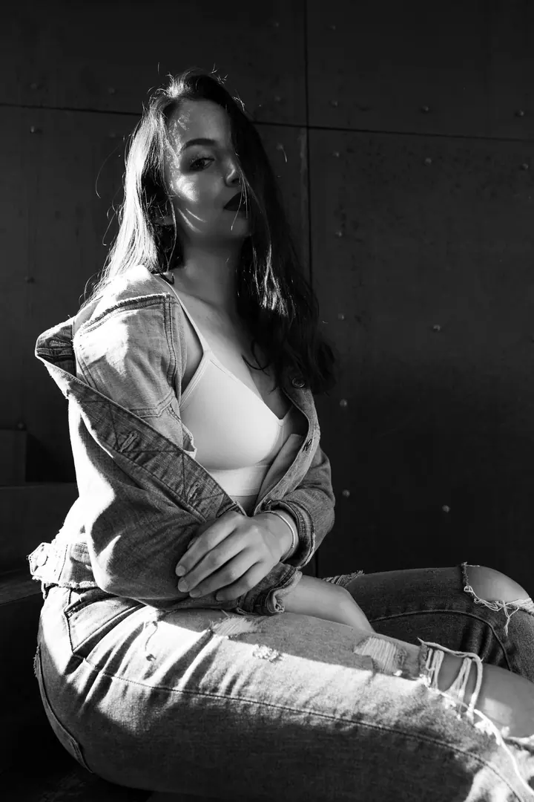

Rodinné focení
Nejde o dokonalé pózy ani o děti, které se dívají do objektivu. Chci zachytit vás takové, jací spolu opravdu jste: objetí, smích, pohyb i dětskou divokost.

Jmenuji se Anna Kolaříková a fotím rodiny, těhotenství a miminka i svatby. Přirozeně a tak, jak to opravdu prožíváte. Fotím ve vlastním ateliéru v Šumicích, u vás doma i…
Rezervovat termínAhoj, jsem Anička. Páry a rodiny fotím už přes 7 let a za tu dobu jsem se naučila vnímat, co komu sedí. Při focení vás jemně navedu, abyste se před objektivem cítili dobře, i když běžně nevíte, co s rukama nebo kam se dívat. Výsledné fotky mají být přirozené a pořád vaše.


S dětmi mám bohaté zkušenosti a dnes jejich svět poznávám i z druhé strany, jako máma malého Kryštůfka. Vím, že každé dítě potřebuje něco jiného. Některé se zapojí hned, jiné se potřebuje chvíli rozkoukat. Proto focení nepřizpůsobuji představě o dokonalé fotografii, ale vám a vašim dětem.
Ať před objektivem stojí pár, celá rodina nebo neposedné děti, hledám hlavně to, co je mezi vámi. Děti rostou, my se měníme a některé chvíle se už nevrátí. Možná vám jednou budou chybět nejvíc právě ty úplně obyčejné.
Co fotím
Nejde o dokonalé pózy ani o děti, které se dívají do objektivu. Chci zachytit vás takové, jací spolu opravdu jste: objetí, smích, pohyb i dětskou divokost.
Od rostoucího bříška k prvním dnům s miminkem. Focení vedu přirozeně a s respektem k tempu miminka, je čas na kojení, přebalení i chování.
Váš den takový, jaký skutečně byl, se vším, co jste cítili. Fotím celý den od příprav i komorní svatby, kde jde hlavně o obřad, nejbližší a párové focení.
Portrétní focení venku i ve městě. Povedu vás tak, abyste se před objektivem cítili přirozeně, i když běžně nevíte, co s rukama nebo kam se dívat.
Postup
Pošlete mi pár slov o sobě a o tom, co si představujete. U svatby mi napište i datum a místo, ozvu se vám s dostupností termínu.
Společně vybereme místo, ať už je to můj ateliér v Šumicích, váš domov, nebo místo venku. Před svatbou si dáme konzultaci, abychom si všechno předem nastavili.
Nikam nespěcháme. Délku focení přizpůsobuji vám, ne balíčku, takže u miminek a malých dětí je čas na krmení, přebalení i rozkoukání.
Fotky pečlivě upravím a pošlu vám je v soukromé online galerii. U rodinného focení si v ní vyberete své oblíbené snímky podle zvoleného balíčku.
Otázky
Vůbec ne. Celým focením vás provedu a jemně navedu, abyste se cítili přirozeně. Nemusíte mít ani dokonale sladěné děti.
Jedno focení má tři možnosti galerie: Momenty za 4 500 Kč (6 fotek), Příběh za 5 500 Kč (15 fotek) a Vzpomínky za 6 500 Kč (minimálně 40 fotek). Další fotky je možné dokoupit.
Balíček Svatební příběh s 8 hodinami focení a předsvatební konzultací stojí 29 000 Kč, komorní svatba se 3 hodinami focení 16 000 Kč. Doprava do 50 km je v ceně, dál účtuji 10 Kč/km ze Šumic.
Ano, obě focení se dají rezervovat společně. Napište mi a ráda vám pošlu podrobnosti.